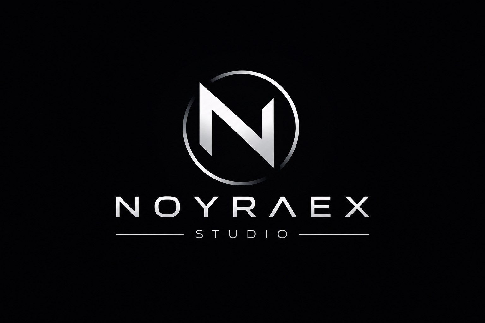

Creator
Build and share your project journey openly. Creators define the direction, vision and milestones for every project.

NOYRAEXBecome a Contributor in the Creator Ecosystem and help shape the next phase of the Project Journey. Support Creators, engage Observers, and grow the Community together.
Build and share your project journey openly. Creators define the direction, vision and milestones for every project.
Follow progress, learn from development journeys, and offer feedback that helps creators refine their work.
Help with code, design, research, or community outreach to make NOYRAEX stronger and more welcoming.
Review issues, suggest features, and contribute development improvements for the platform.
Help shape the visual language, user flows, and interaction patterns for project journeys and community features.
Share ideas, invite Observers, and support Creators by amplifying their progress in the Community.